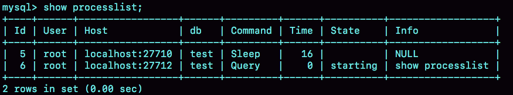

1.基础篇
1.1 一条SQL查询语句是如何执行的？

Server层
连接器、查询缓存、分析器、优化器、执行器等。涵盖MySQL的大多数核心服务功能，以及所有的内置函数(如日期、时间、数学和加密函数等)，所有跨存储引擎的功能在这一层实现，如存储过程、触发器、视图等。
存储引擎层
负责数据的存储和提取。支持InnoDB、MyISAM、Memory等多个存储引擎。MySQL5.5.5版本后默认使用InnoDB。
连接器
连接器负责与客户端建立连接、获取权限、维持和管理连接。
1
mysql -h{ip} -P{port} -u{user} -p
一个用户成功建立连接后，即使使用管理员账户对该用户的权限做了修改，也不会影响已经存在的连接权限，只有新建的连接才会使用新的权限设置。
show processlist 可以查看各连接状态

“Sleep”表示空闲连接，如果客户端太长时间没动静(wait_timeout，默认8小时)，连接器自动断开。
数据库长连接指连接成功后，客户端持续有请求，则一直使用同一个连接；短连接指每次执行完几次查询后就断开连接，下次查询再重新建立。MySQL在执行过程中临时使用的内存是管理在连接对象里的，如果长连接累积下来，会导致内存占用过大。
解决办法：
- 定期断开长连接
- MySQL5.7及以后，可以在每次执行一个比较大的操作后，执行mysql_reset_connection来将连接恢复到刚刚创建完的状态(不需要重连和权限验证)。
查询缓存
之前查询过的语句及其结果可能会以key-value对的形式，被直接缓存在内存中。但只要有对一个表的更新，那么这个表上的查询缓存就会被全部清除。MySQL8.0版本将查询缓存模块删除掉了。
MySQL提供了”按需使用”的方式，将参数query_cache_type设置为DEMAND，这样对于默认的SQL不使用查询缓存。使用SQL_CACHE显式指定：
1
select SQL_CACHE * from T where ID=10；
分析器
如果没有命中查询缓存，就要开真正开始执行语句。
词法分析
把”select”关键字识别出来，把字符串”T”识别为”表名T”，把字符串”ID”识别为”列ID”。
语法分析
1
2
3elect * from t where ID=1;
ERROR 1064 (42000): You have an error in your SQL syntax; check the manual that corresponds to your MySQL server version for the right syntax to use near 'elect * from t where ID=1' at line 1
优化器
在表里有多个索引的时候，决定使用哪个索引；或者一个语句有多表关联(join)的时候，决定各个表的连接顺序。
执行器
开始执行语句，先判断对这个表T是否有权限(如果命中查询缓存，会在查询缓存返回结果时做权限校验)。如果有权限，就开始执行语句。
- 调用InnoDB引擎接口取这个表的第一行，判断ID是否为10，如果不是则跳过，如果是则将这行存在结果集。
- 调用引擎接口取”下一行”，重复相同的判断逻辑，直到取到这个表的最后一行。
- 将结果集返回给客户端。
对于有索引的表，第一次调用的是”满足条件的第一行”这个接口，之后循环取”满足条件的下一行”接口。
1.2 日志系统：一条SQL更新语句是如何执行的
1 | create table T(ID int primary key, c int); |
重要的日志模块：redo log
WAL(Write-Ahead Logging)：先写日志，再写磁盘。当有一条记录需要更新的时候，InnoDB引擎就会先把记录写到redo log里面，并更新内存，这个时候更新就算完成了。同时，InnoDB引擎会在适当的时候，将这个操作记录更新到磁盘里面，而这个更新往往是在系统比较空闲的时候做的。
InnoDB的redo log是固定大小的，比如可以配置为一组4个文件，每个文件的大小是1GB。从头开始写，写到末尾就又回到开头循环写。

write pos是当前记录的位置，一边写一边后移，写到第3号文件末尾后就回到0号文件开头。checkpoint是当前要擦除的位置，也是往后推移并且循环的，擦除记录前要把记录更新到数据文件。
write pos和checkpoint之间空着的部分，可以用来记录新的操作。如果write pos追上checkpoint，这时不能再执行新的更新，得擦掉一些记录，把checkpoint推进一下。
有了redo log，InnoDB就可以保证即使数据库发生异常重启，之前提交的记录都不会丢失，这个能力称为crash-safe。
重要的日志模块：binlog
MySQL整体看包括两块：一块是Server层，它主要做的是MySQL功能层面的事情；还一块是引擎层，负责存储相关的具体事宜。redo log是InnoDB(重做日志)引擎特有的日志，而Server层也有自己的日志，称为binlog(归档日志)
为什么会有两份日志？
因为最开始MySQL里并没有InnoDB引擎。MySQL自带的引擎MyIASM，但是MyISAM没有crash-safe的能力，binlog日志只能用于归档。而InnoDB是以插件形式引入MySQL的，使用另外一套日志系统-redo log来实现crash-safe能力。
这两种日志有以下三点不同：
- redo log是InnoDB引擎特有的，binlog是MySQL的Server层实现的，所有引擎都可以使用。
- redo log是物理日志，记录的是”在某个数据页上做了什么修改”；binlog是逻辑日志，记录的是这个语句的原始逻辑，比如”给ID=2这一行的c字段加1”。
- redo log是循环写的，空间固定会用完；binlog是可以追加写入的，binlog文件写到一定大小后会切换到下一个，并不会覆盖以前的日志。
InnoDB引擎内部执行流程
- 执行器先找引擎取ID=2这一行。(ID是主键，引擎直接用树搜索到这一行。如果ID=2这一行所在的数据页本来就在内存中，就直接返回给执行器；否则，需要先从磁盘读入内存，然后再返回。)
- 执行器拿到引擎给的行数据，把这个值加1，再调用引擎接口写入这行新数据。
- 引擎将这行新数据更新到内存中，同时将这个更新操作记录到redo log，此时redo log处于prepare状态。然后告知执行器执行完成了，随时可以提交事务。
- 执行器生成这个操作的binlog，并把binlog写入磁盘。
- 执行器调用引擎的提交事务接口，引擎把刚刚写入的redo log改成commit状态，更新完成。
浅色表示在InnoDB内部进行，深色表示在执行器中执行。

1.3 事务隔离
事务：保证一组数据库操作，要么全部成功，要么全部失败。
ACID(原子性、一致性、隔离性、持久性)
当数据库上有多个事务同时执行的时候，可能会出现脏读、不可重复读、幻读的问题。SQL标准的事务隔离级别包括：
- 读未提交：一个事务还没提交，它做的变更就能被其他事务看到。
- 读提交：一个事务提交之后，它做的变更才会被其他事务看到。
- 可重复读：一个事务执行过程中看到的数据，总是跟这个事务在启动时看到的数据是一致的。在可重复读隔离级别下，未提交变更对其他事务也是不可见的。
- 串行化：对于同一行记录，”写”会加”写锁”，”读”会加”读锁”。当出现读写锁冲突的时候，后访问的事务必须等前一个事务执行完成，才能继续执行。

- 读未提交：V1 = 2，V2、V3 = 2
- 读提交：V1 = 1，V2 = 2，V3 = 2
- 可重复读：V1、V2 = 1，V3 = 2；之所以V2还是1，是因为：事务在执行期间看到的数据前后必须一致
- 串行化：在事务B执行”将1改成2”的时候，会被锁住。直到事务A提交后，事务B才可以继续执行。所以V1、V2 = 1，V3 = 2
事务隔离的实现
数据库里会创建一个视图，访问的时候以视图的逻辑结果为准。”可重复读”，这个视图是在事务启动时创建的，整个事务存在期间都用这个视图；”读提交”，这个视图是在每个SQL语句开始执行的时候创建的。”读未提交”，直接返回记录上的最新值，没有视图概念；”串行化”，直接用加锁的方式来避免并发访问。
MySQL中，实际上每条记录在更新的时候都会同时记录一条回滚操作。记录上的最新值，都可以得到前一个状态。当系统里没有比这个回滚日志更早的read-view的时候，回滚日志会被删除。
长事务意味着系统里会存在很老的事务视图，这个事务提交之前，数据库里面它可能用到的回滚记录都必须保留，这会导致占用大量存储空间。
事务的启动方式
- 显式启动事务语句，begin或start transaction。配套的语句是commit或者rollback。
- set autocommit = 0，将这个线程的自动提交关掉。意味着如果执行一个select语句，这个事务就启动了，而且不会自动提交。这个事务持续存在直到主动执行commit或者rollback，或者断开连接。
1.4 索引
索引的常见模型
哈希表
以键-值(key-value)存储数据的结构。多个key经过哈希函数换算，会出现同一个值的情况，此时会拉出一个链表。因为不是有序的，所以哈希索引做区间查询的速度很慢。适用于只有等值查询的场景。
有序数组
支持范围查询，但在插入数据和删除数据时必须挪动后面所有的记录，成本太高。适用于静态存储查询，这类不会再修改的数据。
二叉搜索树
二叉搜索树的特点：父节点左子树所有节点小于父节点的值，右子树所有的节点大于父节点的值。
多叉树就是每个节点有多个儿子，儿子的大小保证从左到右递增。索引不止在内存中，还要写到磁盘上。为了尽可能少的读磁盘，就必须让查询过程访问尽量少的数据块。”N叉树”的”N”取决于数据块的大小。
InnoDB的索引模型
每一个索引在InnoDB中对应一棵B+树。
1 | create table T( |
表中 R1~R5 的 (ID,k) 值分别为 (100,1)、(200,2)、(300,3)、(500,5) 和 (600,6)，两棵树的示例示意图如下。
索引类型分为主键索引和非主键索引。
主键索引的叶子节点存的是整行数据。在InnoDB里，主键索引也称为聚簇索引。
非主键索引的叶子节点内容是主键的值。在InnoDB里，非主键索引也被称为二级索引。
基于主键索引和普通索引的查询有什么区别？
- select * from T where ID = 500 即主键查询方式，则只需要搜索ID这棵B+树
- select * from T where k = 5 即普通索引查询方式，则需要先搜索k索引树，得到ID的值为500，再到ID索引树搜索一次，这个过程称为回表。
索引维护
B+树为了维护索引有序性，在插入新值时需要做必要的维护。以上图为例，如果插入新的行ID值为700，则只需要在R5后面插入一个新记录。如果新插入的ID为400，需要逻辑上挪动后面的数据，空出位置。如果R5所在的数据页已满，根据B+树的算法，需要申请一个新的数据页，然后挪动部分数据过去，这个过程称为页分裂，性能会下降。原本放在一个页的数据，现在分到两个页中，整体空间利用率降低大约50%。
当相邻两个页由于删除了数据，利用率很低之后，会将数据页做合并。
自增主键：NOT NULL PRIMARY KEY AUTO_INCREMENT。每次插入一条新纪录，都是追加操作，都不涉及挪动记录，也不会触发叶子节点的分裂。
由于每个非主键索引的叶子节点上都是主键的值。如果用身份证号做主键，那么每个二级索引的叶子节点占用约２０个字节，而如果用整形做主键，则只需要４个字节。主键长度越小，普通索引的叶子节点就越小，普通索引占用的空间也就越小。
覆盖索引
如果执行的语句是 select ID from T where k between 3 and 5，这时只需要查 ID 的值，而 ID 的值已经在 k 索引树上了，因此可以直接提供查询结果，不需要回表。
最左前缀原则
索引项是按照索引定义里面出现的字段顺序排序的。当查询所有名字是”张三”的人时，可以快速定位到ID4，然后向后遍历。
不只是索引的全部定义，只要满足最左前缀，就可以利用索引来加速检索。这个最左前缀可以是联合索引的最左N个字段，也可以是字符串索引的最左M个字符。
如果通过调整顺序，可以少维护一个索引，那么往往优先考虑这个顺序。
索引下推
1 | select * from tuser where name like '张 %' and age=10 and ismale=1; |
MySQL5.6之前，只能从ID3开始一个个回表，到主键索引上找出数据行，再对比字段值。
MySQL5.6之后引入索引下推优化，可以在索引遍历过程中，对索引中包含的字段先做判断，直接过滤掉不满足条件的数据，减少回表次数。
无索引下推：回表4次
有索引下推：在(name，age)索引内部就判断了age是否等于10，对于不等于10的记录，直接判断并跳过，只需回表2次。
1.5 全局锁和表锁
数据库锁设计的初衷是处理并发问题。
全局锁
全局锁就是对整个数据库实例加锁。MySQL提供了一个加全局锁的方法，命令是Flush tables with read lock(FTWRL)。当需要让整个库处于只读状态(不止DML，还包括DDL)时，可以使用该命令。使用场景是，全库逻辑备份的时候。
InnoDB引擎的库推荐使用一致性读(single-transcation)参数，对应用会更友好，全局锁一般在数据库引擎不支持事务时使用。
为什么不使用set global readonly=true？
- readonly的值会被用作其他逻辑，如判断主库备库。
- 异常处理机制有差别，执行FTWRL后由于客户端发生异常断开，那么MySQL会自动释放这个全局锁，整个库回到可以正常更新的状态。readonly，如果客户端发生异常，则数据库就会一直保持readonly状态。
表级锁
MySQL里面的表级别锁有两种：一种是表锁，一种是元数据锁(meta data lock，MDL)
表锁
表锁的语法是lock tables..read/write。与FTWRL类似，可以用unlock tables主动释放锁，也可以在客户端断开的时候自动释放。lock tables不仅会限制别的线程的读写外，也限定了本线程接下来的操作对象。
某个线程A执行lock tables t1 read，t2 write；则其他线程写t1、读写t2的语句都会被阻塞。同时，线程A在执行unlock tables之前，也只能执行读t1、读写t2的操作，连写t1都不允许，自然也不能访问其他表。
元数据锁DML
不需要显示的使用，在访问一个表的时候会被自动加上，保证读写的正确性。
给一个表加字段，或者修改字段，或者加索引。需要扫描全表的数据。
如何安全地给小表加字段？
首先解决长事务的问题，事务不提交，就会一直占着MDL锁。在alter table语句里面设定等待时间，如果在这个指定的等待时间内未拿到MDL锁，则会放弃，不阻塞后面的业务。之后再通过重试命令重复这个过程。
1
2ALTER TABLE tb1_name NOWAIT add column ...
ALTER TABLE tb1_name WAIT N add column ...
1.6 行锁
并不是所有的引擎都支持行锁，如MyISAM不支持行锁。行锁就是针对数据表中行记录的锁，比如事务A更新了一行，而这时事务B也要更新一行，则必须等事务A的操作完成后才能进行更新。
两阶段锁
事务B的update语句会被阻塞，直到事务A执行commit之后，事务B才能继续执行。
在InnoDB事务中，行锁并不是不需要了就立刻释放，而是要等待事务结束时才能释放。
如果事务中需要锁多个行，要把最可能造成锁冲突、最可能影响并发度的锁尽量往后放。
死锁和死锁检测
当并发系统中不同线程出现循环资源依赖，涉及的线程都在等待别的线程释放资源的时候，就会导致这几个线程都进入无限等待的状态，称为死锁。
- 直接进入等待，直到超时。超时时间参数：innodb_lock_wait_timeout，默认50s
- 发起死锁检测，发现死锁后，主动回滚死锁链条中的某一个事务，让其它事务得以继续执行。innodb_deadlock_detect：on，默认开启。
正常情况下使用第二种策略，每当一个事务被锁的时候，就要看看它所依赖的线程有没有被别人锁住，但如果遇到所有事务更新同一行的场景，每个新来的线程都需要判断会不会由于自己加入导致了死锁，会消耗大量的CPU资源。
如何解决热点行更新导致的性能问题？
- 在确保该业务不会出现死锁的情况下，临时取消死锁检测。
- 控制并发度。(中间件、在MySQL里进入引擎之前排队)
- 将一行改成逻辑上的多行来减少锁冲突，如账户总额等于10个记录值的总和。
1.7 事务到底是隔离的还是不隔离的？
当前读：更新数据都是先读后写的，而这个读，只能读当前的值。
事务的可重复读的能力是怎么实现的？
可重复读的核心就是一致性读；而事务更新数据的时候，只能用当前读，如果当前的记录的行锁被其他事务占用的话，就需要进入锁等待。
InnoDB的行数有多个版本，每个数据版本有自己的row trx_id，每个事务或者语句有自己的一致性视图。普通查询语句是一致性读，一致性读会根据row trx_id和一致性视图确定数据版本的可见性。
对于可重复读：查询只承认在事务启动前就已经提交完成的数据；
对于读提交：查询只承认在语句启动前就已经提交完成的数据；
为什么表结构不支持”可重复读”?
因为表结构没有对应的行数据，也没有row trx_id，因此只能遵循当前读的逻辑
2.实践篇
2.1 普通索引和唯一索引该如何选择？
查询
select id from T where k=5
- 普通索引：查找到满足条件的第一个记录(5，500)后，需要查找下一个记录，直到碰到第一个不满足k=5的记录。
- 唯一索引：查找到第一个满足条件的记录后，就会停止检索。
两者的性能差距：InnoDB的数据是按数据页为单位来读写的，当需要读一条记录的时候，并不是将这个记录从磁盘读出来，而是以页为单位，将其整体读入内存，InnoDB中，每个数据页的大小默认是16KB。对于整形字段，一个数据页可以放近千个key，所以k=5这个记录刚好是数据页最后一个记录的几率会很低。
更新过程
当需要更新一个数据页时，如果数据页在内存中就直接更新，而如果这个数据页还没有在内存中的话，在不影响数据一致性的前提下，InnoDB会将这些更新操作缓存在chang buffer中，在下次查询需要访问这个数据页的时候将数据页读入内存，然后执行change buffer中与这个页有关的参数。
虽然名字叫做change buffer，实际上它是可以持久化的数据，change buffer在内存中有拷贝，也会被写入磁盘中。
将change buffer中操作应用到原数据页，得到最新结果的过程称为merge。除了访问这个数据页会触发merge外，系统有后台线程会定期merge。在数据库正常关闭(shutdown)的过程中，也会执行merge操作。
对于唯一索引，比如插入(4,400)这个记录，需要先判断表中是否存在k=4的记录，而这必须要将数据页读入到内存才能判断。如果已经读入内存了，直接更新内存即可，没必要再使用change buffer。因此，唯一索引的更新不能使用change buffer。
innodb_change_buffer_max_size: 50 表示change buffer的大小最多只能占用buffer pool的50%。
插入(4,400)：
- 更新的目标页在内存中
- 唯一索引：找到3和5之间的位置，判断没有冲突，插入值。
- 普通索引：找到3和5之间的位置，插入值。
- 更新的目标页不在内存中
- 唯一索引：将数据页读入内存，判断没有冲突，插入值。
- 普通索引：将更新记录在change buffer。
change buffer的使用场景
因为merge的时候是真正进行数据更新的时刻，而change buffer的主要目的就是将记录的变更动作缓存下来，所以在一个数据页做merge之前，change buffer记录的变更越多，收益越大。即适合于写多读少的场景。
change buffer和redo log
insert into t(id,k) values (id1,k1)(id2,k2);
假设当前 k 索引树的状态，查找到位置后，k1 所在的数据页在内存 (InnoDB
buffer pool) 中，k2 所在的数据页不在内存中。
- Page1在内存中，直接更新内存。
- Page2不在内存中，将更新记录在change buffer。
- 将上述两个动作记录在redo log。
select * from t where k in (k1, k2)
- 读Page1时，直接从内存返回。
- 读Page2时，需要把Page2从磁盘读入内存，然后应用change buffer里的操作记录，生成一个正确的版本并返回结果。
redo log主要节省的是随机写磁盘的IO消耗(转为顺序写)，而change buffer主要节省的是随机读磁盘的IO消耗。
2.2 MySQL为什么有的时候会选错索引？
优化器的逻辑
扫描行数、是否使用临时表、是否排序等因素。
一个索引上不同的值越多(基数)，这个索引的区分度就越好。
MySQL是怎样得到索引的基数的？
采样统计：InnoDB默认会选择N个数据页，统计这些页面上的不同值，得到一个平均值，然后乘以这个索引的页面数，就得到这个索引的基数。而数据表是会持续更新的，索引统计信息也需要同步改变。所以，当变更的数据行超过1/M的时候，会自动触发重新做一次索引统计。
innodb_stats_persistent:
on：统计信息会持久存储，默认N是20，M是10。
off：统计信息只存储在内存中，默认N是8，M是16。
analyze table t：重新统计索引信息
索引选择异常和处理
1 | select * from t where a between 1 and 1000 and b betwwen 50000 and 100000 order by b limit 1 |
采用force index强行选择一个索引
1
select * from t force index(a) where a between 1 and 1000 and b between 50000 and 100000 order by b limit 1
修改语句，引导MySQL使用期望的索引
“order by b limit 1”改成”order by b,a limit 1”，语义逻辑相同。之前优化器选择索引b，因为它认为使用索引b可以避免排序(b本身就是索引，不需要再次进行排序，只需要遍历)，所以即使扫描行数多，也判定为代价更小。”order by b,a”，意味着使用这两个索引都需要排序，因此，扫描行数成了影响索引选择的主要条件，于是，此时优化器选择了只需要扫描1000行的索引a。
但这种优化方法并不通用。
新建一个更合适的索引，来提供给优化器做选择，或者删除掉误用的索引
2.3 怎么给字符串字段加索引？
1 | alter table SUser add index index1(email); |
由于email(6)这个索引结构中每个邮箱字段都只取前6个字节，所以占用的空间会更小，但可能会增加额外的记录扫描次数。
1 | select id,name,emial from SUser where email='zhangssxyz@xxx.com' |
如果使用的是index1(即email整个字符串的索引结构)
- 从index1索引树找到满足索引值是‘zhangssxyz@xxx.com’的这条记录，取得ID2的值。
- 到主键上查到主键值是ID2的行，判断email的值是正确的，将这条记录加入结果集。
- 取 index1 索引树上刚刚查到的位置的下一条记录，发现已经不满足email=’zhangssxyz@xxx.com’的条件了，循环结束。
这个过程中，只需要回主键索引取一次数据，所以系统认为只扫描了一行。
如果使用的是index2(即emai(6)索引结构)
- 从 index2 索引树找到满足索引值是’zhangs’的记录，找到的第一个是 ID1；
- 到主键上查到主键值是 ID1 的行，判断出 email 的值不是’zhangssxyz@xxx.com’，这行记录丢弃；
- 取 index2 上刚刚查到的位置的下一条记录，发现仍然是’zhangs’，取出 ID2，再到ID 索引上取整行然后判断，这次值对了，将这行记录加入结果集；
- 重复上一步，直到在 idxe2 上取到的值不是’zhangs’时，循环结束。
在这个过程中，要回主键索引取 4 次数据，也就是扫描了 4 行。
使用前缀索引，定义好长度，就可以做到即节省空间，又不用额外增加太多的查询成本。
怎么确定该使用多长的前缀呢？
区分度越高越好，意味着重复的键值越少。因此可以通过统计索引上有多少个不同的值来判断要使用多长的前缀。
1 | select count(ditstinct email) as L from SUser |
依次选取不同长度的前缀的值，如
1 | select count(ditstinct left(emial,4)) as L4,count(ditstinct left(emial,5)) as L5,count(ditstinct left(emial,6)) as L6,count(ditstinct left(emial,7)) as L7 from SUser |
使用前缀索引很可能损失区分度，所以需要预先设定一个可以接收的损失比例，比如 5%。然后，在返回的 L4~L7 中，找出不小于 L * 95% 的值，假设这里 L6、L7都满足，你就可以选择前缀长度为 6。
前缀索引对覆盖索引的影响
1 | select id,email from SUser where email='zhangssxyz@xxx.com’; |
与前面例子中的SQL语句相比，这个语句只要求返回id和email字段。
1 | select id,name,email from SUser where email='zhangssxyz@xxx.com’; |
如果使用index1(即email整个字符串的索引结构)的话，可以利用覆盖索引，从index1查到结果后直接就返回了，不需要回表；而如果使用index2(即email(6)索引结构)的话，就不得不回到ID索引再去判断email的值。
即使将index2的定义修改为email(18)的前缀索引，这时候虽然index2已经包含了所有的信息，但InnoDB还是要回到id索引再查一下，因为系统并不确定前缀索引的定义是否截断了完整信息。
其他方式
使用倒序存储
如果存储身份证号的时候把它倒过来存，每次查询的时候，可以这样写：
1
select field_list from t where id_card = reverse('input_id_card_string')
使用hash字段
可以在表上再创建一个整数字段，来保存身份证的校验码，同时在这个字段上创建索引。
1
alter table t add id_card_crc int unsigned, add index(id_card_crc)
每次插入新记录的时候，都同时用crc32()这个函数得到校验码填到这个新字段。由于校验码可能会冲突，所以查询语句where部分要判断id_card的值是否精确相同。
1
select field_list from t where id_card_crc=crc32('input_id_card_string') and id_card='input_id_card_string'
使用倒序存储和使用 hash 字段的异同点
- 倒叙存储方式在主键索引上，不会消耗额外的存储空间，而hash字段方法需要增加一个字段。
- 倒序方式每次写和读的时候，都需要额外调一次reverse函数，而hash字段需要额外调一次crc32()函数，单纯从计算复杂度来看，reverse函数额外消耗的CPU资源会更小。
- hash字段方式的查询性能相对更加稳定，因为crc32()算出来的值虽然有冲突的概率，但概率非常小，可以认为每次查询平均扫描行数接近1，而倒序存储方式毕竟还是前缀索引的方式，即还是会增加扫描行数。
2.4 为啥SQL语句偶尔会变”慢”？
InnoDB在处理更新语句的时候，只做了写日志这一个磁盘操作(redo log)，在更新内存写完redo log后，就返回给客户端，本次更新成功。
flush：把内存中的数据写入磁盘的过程
当内存数据页跟磁盘数据页内容不一致的时候，称这个内存为”脏页”。内存数据写入到磁盘后，内存就和磁盘上的数据页上的数据页的内容就一致了，称为”干净页”。
平时执行很快的操作：写内存和日志
偶尔”抖”一下：刷脏页(flush)
什么情况下会引发数据库的flush操作?
InnoDB的redo log写满了。这时系统会停止所有更新操作，把checkpont往前推进，redo log留出空间可以继续写。
把checkpoint位置从CP推进到CP’，就需要将两个点之间的日志，对应的所有脏页都flush到磁盘上。
系统内存不足。当需要新的内存页，而内存不够用的时候，淘汰一些数据页，空出内存。如果淘汰的是”脏页”，就需要先将脏页写到磁盘。
MySQL认为系统”空闲”的时候就刷一点”脏页”。
MySQL正常关闭的时候，会把内存的脏页都flush到磁盘上，这样MySQL启动的时候，就可以直接从磁盘上读数据，启动速度会很快。
对性能的影响
“redo log 写满了，要 flush 脏页”，这种情况，所有的更新都被堵塞，需要避免。
“内存不够用了，要先将脏页写到磁盘”，InnoDB使用缓冲池管理内存，缓冲池中的内存页有3种状态：还没有使用的、使用了并且是干净页、使用了并且是脏页。
当要读入的数据页没有在内存中的时候，就必须到缓冲池申请一个数据页。这时需要把最久不使用的数据页从内存中淘汰掉。如果淘汰的是一个干净页，就直接释放出来复用；如果是脏页，就必须先刷到磁盘，变成干净页后才能复用。
- 一个查询要淘汰的脏页个数太多。
- 日志写满，更新全部堵住。
InnoDB刷脏页的控制策略
参考因素：脏页比例，redo log写盘速度。
innodb_max_dirty_pages_pct：脏页比例上限，默认75% F1(M)
InnoDB每次写日志都有一个序号，当前写入的序号跟checkpoint对应的序号之间的差值，假设为F2(N)(N越大，算出来的值越大)。
F1(M)和F2(N)的最大值为R，接下来引擎就可以按照innodb_io_capacity定义的能力乘以R%来控制刷脏页的数据。
合理设置innodb_io_capacity，多关注脏页比例，不要让它接近75%。
innodb_flush_neighbors，值为1时，对于每个邻居数据页，如果跟它相邻的数据页也还是脏页的话，也会被放到一起刷(机械硬盘时代，减少随机IO)。值为0时，只刷自己的，MySQL8.0之后，默认为0。
2.5 为什么表数据删掉一半，表文件大小不变？
参数innodb_file_per_table
innodb_file_per_table：MySQL5.6.6版本后默认为ON
- OFF：表的数据放在系统共享表空间，也就是跟数据字典放在一起。
- ON：每个InnoDB表数据存储在一个.ibd为后缀的文件中。
推荐设置为ON，一个表单独存储为一个文件更容易管理，不需要这个表的时候，通过drop table命令，系统就会直接删除这个文件。如果放在共享表空间中，即使表删掉了，空间也是不会回收的。
数据删除流程
假设，我们需要删除掉R4这个记录，InnoDB引擎只会把R4这个记录标记为删除。如果之后要再插入一个ID在300和600之间的记录时，可能会复用这个位置。但是，磁盘文件的大小并不会缩小。
InnoDB的数据是按页存储的，如果删除一个数据页上的所有记录，整个数据页就可以被复用了，但是，数据页的复用跟记录的复用是不同的。记录的复用，只限于符合范围条件的数据。而当整个页从B+树里面摘掉以后，可以复用到任何位置。
如果相邻的两个数据页利用率都很小，系统就会把这两个页上的数据合到其中一个页上，另一个数据页就被标记为可复用。
如果用delete命令删除整个表的数据，所有的数据页都会被标记为可复用。但磁盘上，文件大小不变。
不止是删除数据会造成空洞，插入数据也会。
如果数据是按照索引递增顺序插入的，那么索引是紧凑的。但如果数据是随机插入的，就可能造成索引的数据页分裂。
由于page A满了，申请一个新的页面page B来保存数据。页面分裂完成后，page A的末尾就留下了空洞。
重建表
新建一个与表A结构相同的表B，然后按照主键ID递增的顺序，把数据一行行地从表A里读出来再插入到表B中。
1 | alert table A engine=InnoDB |
MySQL5.6版本开始引入Online DDL(往临时表插入数据的过程中，表A中不能有更新)。
- 建立一个临时文件，扫描表A主键的所有数据页。
- 用数据页中表A的记录生成B+树，存储到临时文件。
- 生成临时文件的过程中，将所有对A的操作记录在一个日志文件(row log)中，对应图中state2的状态。
- 临时文件生成后，将日志文件中的操作应用到临时文件，得到一个逻辑数据与表A相同的数据文件，对应图中state3的状态。
- 用临时文件替换表A的数据文件。
2.6 count(*)的实现方式
MyISAM引擎把一个表的总行数存在了磁盘上，count(*)会直接返回这个数(不含where条件)。
InnoDB引擎需要把数据一行一行的从引擎里面读出来，然后累计计数。
为什么InnoDB不像MyISAM一样把数字存放起来？
和InnoDB的事务设计有关，可重复读是它的默认的隔离级别，通过多版本并发控制(MVCC)实现。每一行记录都要判断自己是否对这个会话可见，因此count(*)，InnoDB只好把数据一行一行的读出依次判断。
- MyISAM表虽然count(*)很快，但不支持事务；
- show table status 命令虽然返回很快，但是不准确；
- InnoDB直接count(*)会遍历全表，虽然结果准确，但会导致性能问题。
不同的count用法
count() 是一个聚合函数，对于返回的结果集，一行行地判断，如果 count 函数的参数不是 NULL，累计值就加 1，否则不加。最后返回累计值。
原则：
- server原则要什么就什么；
- InnoDB只给必要的值；
- 现在的优化器只优化了count(*)的语义取行数。
count(主键id)
InnoDB引擎会遍历整张表，把每一行的id值都取出来，返回给server层。server层拿到id后，判断是不可能为空后，按行累加。
count(1)
InnoDB引擎遍历整张表，但不取值。server层对于返回的每一行，放一个数字”1”进去，判断是不可能为空的，按行累加。
count(1) 执行得要比 count(主键 id) 快。因为从引擎返回 id 会涉及到解析数据行，以及拷贝字段值的操作。
count(字段)
- 如果这个“字段”是定义为 not null 的话，一行行地从记录里面读出这个字段，判断不能为 null，按行累加；
- 如果这个“字段”定义允许为 null，那么执行的时候，判断到有可能是 null，还要把值取出来再判断一下，不是 null 才累加。
count(*)
不取值。count(*) 肯定不是 null，按行累加。
效率：count(字段)<count(主键id)<count(1)≈count(*)
2.7 “order by”是如何工作的？
1 | CREATE TABLE `t` ( |
全字段排序
Extra：”Using filesort”表示需要排序，MySQL会给每个线程分配一块内存用于排序，称为sort_buffer。
- 初始化sort_buffer，确定放入name、city、age三个字段；
- 从索引city找到第一个满足city=’杭州’条件的主键id，即图中的ID_X；
- 到主键id索引取出整行，取name、city、age三个字段的值，存入sort_buffer中；
- 从索引city取下一个记录的主键id；
- 重复步骤3、4直到city的值不满足查询条件为止，对应的主键id也就是图中的ID_Y；
- 对sort_buffer中的数据按照字段name快速排序；
- 按照排序结果取前1000行返回给客户端。
sort_buffer_size：MySQl为排序开辟的内存的大小。如果要排序的数据量小于sort_buffer_size，排序就在内存中完成，否则利用磁盘临时文件辅助排序(外部排序。
外部排序一般使用归并算法，即将要排序的数据分成12份，每一份单独排序后，将这12个有序文件再合并成一个有序的大文件。如果sort_buffer_size超过了需要排序的数据量的大小，number_of_tmp_files就是0，sort_buffer_size越小，需要分成的份数越多，number_of_tmp_files的值就越大。
只对原表的数据读了一遍，剩下的操作都是在sort_buffer或临时文件中执行，但如果要查询返回的字段特别多，则需要分成很多临时文件，排序性能很差。
rowid排序
1 | set max_length_for_sort_data = 16 |
如果单行的长度超过这个值，MySQL就认为单行太大，需要换个算法(city、name、age这3个字段的定义总长度36)。新的算法放入sort_buffer的字段，只要排序的列(即name字段)和主键id。
- 初始化sort_buffer，确定放入两个字段，即name和id；
- 从索引city找到第一个满足city=’杭州’条件的主键id，即图中的ID_X；
- 到主键id索引取出整行，取name、id字段，存入sort_buffer中；
- 从索引city取下一个记录的主键id；
- 重复步骤3、4直到city的值不满足查询条件为止，对应的主键id也就是图中的ID_Y；
- 对sort_buffer中的数据按照字段name快速排序；
- 遍历排序结果，取前1000行，并按照id的值回到原表取出city、name和age三个字段返回给客户端。
rowid多访问了一次表t的主键索引，即步骤7。
如果内存够，就要多利用内存，尽量减少磁盘访问。
MySQL之所以要生成临时表并且在临时表上做排序操作，是因为原来的数据都是无序的。
联合索引
如在这张表上创建一个city和name的联合索引：
1 | alter table t add index city_user(city,name) |
- 从索引(city,name)找到第一个满足city=’杭州’条件的主键id；
- 到主键id索引取出整行，取name、city、age三个字段的值，作为结果集的一部分直接返回；
- 从索引(city,name)取下一个记录主键id；
- 重复步骤2、3，直到查到第1000条记录，或者是不满足city=’杭州’时循环结束。
覆盖索引
覆盖索引上的信息足够满足查询请求，不需要再回到主键索引上取数据。
1 | alter table t add index city_user_age(city,name,age) |
- 从索引(city,name,age)找到第一个满足city=’杭州’条件的记录，取出其中的city、name和age这3个字段的值，作为结果集的一部分直接返回；
- 从索引(city,name,age)取下一个记录，同样取出这3个字段的值，作为结果集的一部分直接返回；
- 重复执行步骤2，直到查到第1000条记录，或者是不满足city=’杭州’时循环结束。
2.8 为什么这些SQL语句逻辑相同，但性能差异巨大
条件字段函数操作
1
2
3
4
5
6
7
8
9CREATE TABLE `tradelog` (
`id` int(11) NOT NULL,
`tradeid` varchar(32) DEFAULT NULL,
`operator` int(11) DEFAULT NULL,
`t_modified` datetime DEFAULT NULL,
PRIMARY KEY (`id`),
KEY `tradeid` (`tradeid`),
KEY `t_modified` (`t_modified`)
) ENGINE=InnoDB DEFAULT CHARSET=utf8mb4;查询所有年份中7月份的交易记录总数：
1
select count(*) from tradelog where month(t_modified)=7;
下面是t_modified索引的示意图，方框上面的数字就是month()函数对应的值。
B+树的快速定位能力来源于同一层兄弟节点的有序性，对索引字段做函数操作，可能会破环索引值的有序性，因此优化器决定放弃走树搜索功能，导致全索引扫描(并不是放弃这个索引)。
1
select count(*) from tradelog where(t_modified >='2016-7-1' and t_modified <'2016-7-1') or (t_modified >='2017-7-1' and t_modified <'2017-7-1') or (t_modified >='2018-7-1' and t_modified <'2018-7-1')
隐式类型转换
1
select * from tradelog where tradeid=110717;
tradeid的字段类型是varchar(32)，而输入的参数是整形，需要做类型转换。
字符串和数字作比较：将字符串转换成数字
1
select * from tradelog where CAST(tradeid AS signed int) = 110717;
因此触发：对索引字段做函数操作，优化器会放弃走树搜索功能。
隐式字符编码转换
1
2
3
4
5
6
7
8
9
10
11
12
13
14
15
16
17
18
19
20
21
22CREATE TABLE `trade_detail` (
`id` int(11) NOT NULL,
`tradeid` varchar(32) DEFAULT NULL,
`trade step` int(11) DEFAULT NULL, /* 操作步骤 */
`step_info` varchar(32) DEFAULT NULL, /* 步骤信息 */
PRIMARY KEY (`id`),
KEY `tradeid` (`tradeid`)
) ENGINE=InnoDB DEFAULT CHARSET=utf8;
insert into tradelog values(1, 'aaaaaaaa', 1000, now());
insert into tradelog values(2, 'aaaaaaab', 1000, now());
insert into tradelog values(3, 'aaaaaaac', 1000, now());
insert into trade_detail values(1, 'aaaaaaaa', 1, 'add');
insert into trade_detail values(2, 'aaaaaaaa', 2, 'update');
insert into trade_detail values(3, 'aaaaaaaa', 3, 'commit');
insert into trade_detail values(4, 'aaaaaaab', 1, 'add');
insert into trade_detail values(5, 'aaaaaaab', 2, 'update');
insert into trade_detail values(6, 'aaaaaaab', 3, 'update again');
insert into trade_detail values(7, 'aaaaaaab', 4, 'commit');
insert into trade_detail values(8, 'aaaaaaac', 1, 'add');
insert into trade_detail values(9, 'aaaaaaac', 2, 'update');
insert into trade_detail values(10, 'aaaaaaac', 3, 'update again');
insert into trade_detail values(11, 'aaaaaaac', 4, 'commit');查询id=2的交易的所有操作步骤信息：
1
select d.* from tradelog l,trade_detail d where d.tradeid=l.tradeid and l.id=2;
- 优化器会先在交易记录表tradelog上查到id=2的行，这个步骤使用了主键索引，row=1表示只扫描一行；
- 第2行key=NULL，表示没用上交易详情表trade_detail上的tradeid索引，进行了全表扫描。
从tradelog表中取tradeid字段，再去trade_detail表里查询匹配字段。因此，tradelog称为驱动表，把trade_detail表称为被驱动表，把tradeid称为关联字段。
- 根据id在tradelog表中找到L2这一行；
- 从L2中取出tradeid字段的值；
- 根据tradeid值到trade_detail表中查找条件匹配的行。explain的结果里面第二行的key=NULL表示的就是，这个过程就是通过遍历主键索引的方式，一个个的判断tradeid的值是否匹配。
1
select * from trade_detail where tradeid=$L2.tradeid.value
$L2.tradeid.value的字符集就是utf8mb4，字符集utf8mb4是utf8的超集，两个不同类型的字符串比较时，MySQL会把utf8字符串转成utf8mb4字符集再做比较。所以需要将被驱动数据表里的字段一个一个转成utf8mb4，再与L2比较，类似于：
1
select * from trade_detail where CONVERT(tradeid USING uth8mb4)=$L2.tradeid.value
再次触发了：对索引字段做函数操作，优化器会放弃走树搜索功能。
连接过程中要求在被驱动表的索引字段上加函数操作，是直接导致对被驱动表做全表扫描的原因。
1
select operator from tradelog where traideid =$R4.tradeid.value;
改写为：
1
select operator from tradelog where traideid =CONVERT($R4.tradeid.value USING utf8mb4);
CONVERT函数加在输入参数上，可以用上被驱动表的tradeid索引。
优化：
1
select d.* from tradelog l, trade_detail d where d.tradeid=l.tradeid and l.id=2;
把trade_detail表上的tradeid字段的字符集也改成utf8mb4
1
alter table trade_detail modify tradeid varchar(32) CHARACTER SET utf8mb4 default null;
修改sql语句，主动把l.tradeid转成utf8，避免了被驱动表上的字符编码转换。
1
select d.* from tradelog l,trade_detail d where d.tradeid=CONVERT(l.trade.id USING utf8) on l.id=2;
2.9 为什么我只查一行的语句，也执行这么慢？
1 | CREATE TABLE `t` ( |
查询长时间不返回
大概率表t被锁住了，执行
show processlist命令查看当前语句状态。等MDL锁
Wating for table metadata lock状态表示的是，现在有一个线程正在表t上请求或持有MDL写锁，把select语句堵住了。找到谁持有MDL锁，然后把它kill掉。
通过查询sys.schema_table_lockwaits这张表，直接找出造成阻塞的process id，把这个连接用kill命令断开即可。1
select blocking_pid from sys.schema_table_lock_waits;
等flush
Waiting for table flush表示，有一个线程正要对表t做flush操作。1
2flush table t with read lock; #只关闭表t
flush table with read lock; #关闭所有打开的表
正常情况下，这两个语句执行都很快，可能的情况：有一个flush tables 命令被别的语句堵住了，然后它又堵住了select语句。等行锁
sessionA sessionB begin;
update t set c=c+1 where id=1;select * from where id=1 lock in share mode; show processlist

查询是谁占有了写锁：
1
2
3select locked_table,waiting_pid,waiting_query,blocking_trx_id,blocking_pid from sys.innodb_lock_waits;
kill 4

查询慢
查看是否开启慢查询
1
2show variables like 'slow_query%';
show variables like 'long_query_time';设置慢查询
1
set long_query_time=0;
sessionA sessionB start transaction with consistent snapshot; update t set c=c+1;//执行100万池 select * from t where id=1; select * from where id=1 lock in share mode; session B更新完100万次，生成了100万个回滚日志(undo log)。(undo log里记录的其实是”把2改成1”，”把3改成2”这样的操作逻辑)
带lock in share mode的SQL语句，是当前读，因此会直接读到1000001这个结果，所以速度很快；而select * from t where id=1是一致性读，因此需要从1000001开始，依次执行log，执行100万次以后，才将1这个结果返回。
2.10 幻读
幻读有什么问题？
- 语义
- 数据一致性
如何解决幻读？
产生幻读的原因：行锁只能锁住行，但是新插入记录这个动作，要更新的是记录之间的”间隙”。
间隙锁(Gap Lock)
锁的就是两个值之间的空隙。
1
2
3
4
5
6
7
8
9
10CREATE TABLE `t` (
`id` int(11) NOT NULL,
`c` int(11) DEFAULT NULL,
`d` int(11) DEFAULT NULL,
PRIMARY KEY (`id`),
KEY `c` (`c`)
) ENGINE=InnoDB;
insert into t values(0,0,0),(5,5,5),
(10,10,10),(15,15,15),(20,20,20),(25,25,25);
当执行
select * from t where d=5 for update的时候，就不止给数据库中已有的6个记录加上了行锁，还同时加了7个间隙锁。这样就确保了无法再插入新的记录。即在一行行扫描的过程中，不仅给行加上了行锁，还给行两边的空袭，也加上了间隙锁。行锁分为读锁和写锁：

跟行锁有冲突关系的是”另外一个行锁”。
但跟间隙锁存在冲突关系的，是”往这个间隙中插入一个记录”这个操作。间隙锁之间都不存在冲突关系。
间隙锁和行锁合称next-key lock，next-key-lock解决了幻读的问题，但可能会导致同样的语句锁住更大的范围。
间隙锁在可重复读隔离级别下才会生效，把隔离级别设为读提交，就没有间隙锁了。但同时可能会出现数据和日志不一致问题，需要把binlog格式设置为row。


2.11 next-key lock
- 原则1：加锁的基本单位是next-key lock，前开后闭((5,10])
- 原则2：查找过程中访问到的对象才会加锁
- 优化1：索引上的等值查询，给唯一索引加锁的时候，next-key lock退化成行锁
- 优化2：索引上的等值查询，向右遍历时且最后一个值不满足等值条件的时候，next-key lock退化为间隙锁
- bug：唯一索引上的范围查询会访问到不满足条件的第一个值为此
删除数据的时候尽量加limit，不仅可以控制删除数据的条数，让操作更安全，还可减小加锁的范围。
next-key lock实际上是由间隙锁加行锁实现的。
2.12 应急提高性能的方法
短连接风暴
如果使用的是短链接，业务高峰期，连接数暴增。MySQL建立连接成本很高(网络连接3次握手、登录权限判断和获得这个连接的读写权限)。
数据库处理不及时；机器负载较高时，处理现有请求耗时变长，每个连接保持的时间也更长；连接数上限：max_connections，超过这个值时，会拒绝接下来的连接请求，并报错提示”Too many connections”。
先处理掉那些占着连接但不工作的线程
max_connections，只要连着就占用一个计数位置。kill connection处理掉不需要保持的连接；设置wait_tineout参数(一个线程空闲wait_timeout这么多秒以后，就会被MySQL直接断开连接)。
优先断开事务外空闲太久的连接，如果这样还不够，再考虑断开事务内的空闲太久的连接。(从 information_schema.innodb_trx 查询事务状态)
kill connection + id，一个客户端处于sleep状态，它的连接被服务端主动断开，这个客户端并不会马上知道。直到客户端在发起下一个请求的时候，才会收到报错”ERROR 2013 (HY000): Lost connection to
MySQL server during query”。减少连接过程的消耗
让数据库跳过权限验证阶段，重启数据库，并使用-skip-grant-tables参数启动，整个MySQL会跳过所有的权限验证，包括连接过程和语句执行过程，风险极高。
MySQL8.0，如果启用-skip-grant-tables参数，MySQL会默认把-skip-networking参数打开，表示数据库只能被本地的客户端连接。
慢查询性能问题
引发慢查询的可能：
- 索引没有设计好
- SQL语句没写好
- MySQL选错索引
索引没有设计好
紧急创建索引，MySQL5.6之后，创建索引支持Online DDL，直接执行alter table语句。
- 在备库B上执行set sql_log_bin=off，即不写binlog，然后执行alter table语句加上索引；
- 执行主备切换；
- 这时候主库是B，备库是A。在A上执行set sql_bin_log=off，然后执行alter table语句加上索引。
SQL语句没写好
MySQL5.7之后提供了query_rewrite功能，可以把输入的一种语句改写成另外一种模式。
如语句被错误地写成了
select * from t where id + 1 = 10000，可以通过下面的
方式，增加一个语句改写规则。1
2
3
4mysql> insert into query_rewrite.rewrite_rules(pattern, replacement, pattern_database) values ("select * from t where id + 1 = ?", "select * from t where id = ? - 1", "db1");
call query_rewrite.flush_rewrite_rules();
-- 这个存储过程，让插入的新规则生效，即"查询重写"
MySQL选错索引
使用查询重写功能，给原来的语句加上force index。
通过以下方式，预先发现问题：
- 上线前，在测试环境，把慢查询日志(show log)打开，并把long_query_time设为0。(确保每个语句都会被记录入慢查询日志)
- 在测试表里插入线上数据，进行回归测试。
- 观察慢查询日志里每类语句的输出，特别留意Rows_examined(每次执行过程中实际扫描的记录数)字段是否与预期一致。
QPS突增问题
业务突然出现高峰或应用程序bug，导致某个语句QPS暴增。
由全新业务的bug导致的，能够确定业务方会下掉这个功能，可以从数据库直接把白名单去掉。(白名单机制)
如果使用的是单独的数据库用户，可以用管理员账号把这个用户删掉。(业务账户分离)
如果新增的功能和主体功能是部署在一起的，可以通过查询重写功能，单独把这个语句以select 1的结果返回。
副作用：
- 如果别的功能里也使用了这个SQL语句模板，会有误伤。
- 很多业务不是一个语句就完成逻辑的，单独把这个语句以select 1的结果返回，可能导致后面的业务逻辑一起失败。

2.13 MySQL是如何保证数据不丢失的
WAL机制(Write-Ahead Logging 先写日志，再写磁盘)，只要redo log和binlog保证持久化到磁盘，就能确保MySQL异常重启后，数据可以恢复。
binlog的写入机制
事务执行过程中，先把日志写到binglog cache，事务提交的时候，再把binlog cache写到binlog文件中。
系统给binlog cache分配了一片内存，每个线程一个，参数binlog_cache_size用于控制单个线程内binlog cache所占内存的大小。如果超过，就要暂存到磁盘。

每个线程有自己的binlog cache，但共用同一份binlog文件。
write：把日志写入到文件系统的page cache，并没有把数据持久化到磁盘，速度较快。
fsync：将数据持久化到磁盘，占用磁盘的IOPS。
参数sync_binlog：
- sync_binlog=0时，每次提交事务都只write，不fsync；
- sync_binlog=1时，每次提交事务都会执行fsync；
- sync_binlog=N(N>1)时，表示每次提交事务都write，但累积N个事务后才能fsync。
如果IO出现瓶颈，可以将sync_binlog设为一个较大的值。但实际考虑到丢失日志量的可控性，常见的是将其设置为100-1000。但是，将sync_binlog设置为N，对应的风险是：如果主机发生异常重启，会丢失最近N个事务的binlog日志。
redo log的写入机制
redo log buffer：在事务执行的过程中，生成的redo log是要先写到redo log buffer的。

- 存在redo log buffer中，物理上是在MySQL进程内存中，图中红色部分。
- 写到磁盘(write)，但是没有持久化(fsync)，物理上是在文件系统的page cache里，图中黄色部分。
- 持久化到磁盘，对应hard disk，图中绿色部分。
innodb_flush_log_at_trx_commit参数：
- 为0时，表示每次事务提交时都只是把redo log留在redo log buffer中；
- 为1时，表示每次事务提交时都将redo log持久化到磁盘。
- 为2时，表示每次事务提交时都只是把redo log写到page cache。
InnoDB有一个后台线程，每隔1秒，就会把redo log buffer中的日志，调用write写到文件系统的page cahce，然后调用fsync持久化到磁盘。
事务执行中间过程的redo log也是直接卸载redo log buffer中的，这些redo log也会被后台线程一起持久化到磁盘。所以，一个没有提交的事务的redo log，也是可能已经持久化到磁盘的。
除了后台线程的轮询操作，还有两种场景会让一个没有提交的事务的redo log写入到磁盘中：
- redo log buffer占用的空间即将达到innodb_log_buffer_size一半的时候，后台线程会主动写盘。由于这个事务并没有提交，所以这个写盘动作只是write，而没有调用fsync，即只留在了文件系统的page cache。
- 并行的事务提交时，顺带将这个事务的redo log buffer持久化到磁盘。
两阶段提交：时序上redo log先prepare，再写binlog，最后再把redo log commit。
如果把innodb_flush_log_at_trx_commit设置为1，那么redo log在prepare阶段就要持久化一次，因为有一个崩溃恢复逻辑是要依赖prepare的redo log，再加上binlog来恢复的。
每秒一次后台轮询刷盘，再加上崩溃恢复这个逻辑，InnoDB就认为redo log在commit的时候就不需要fsync了，只会write到文件系统的page cache中就够了。
“双1”配置：sync_binlog和innodb_flush_log_at_trx_commit都设置为1，即一个事务完整提交前，需要等待两次刷盘，一次是redo log(prepare阶段)，一次是binlog。
组提交
日志逻辑序列号(LSN)：单调递增，用来对应redo log的一个个写入点。每次写入长度为length的redo log，LSN的值就会加上length。LSN也会写到InnoDB的数据页中，来确保数据页不会被多次执行重复的redo log。
三个并发事务在prepare阶段，都写完redo log buffer，持久化到磁盘的过程，对应的LSN分别是50、120和160。
- trx1是第一个到达的，会被选为这组的leader；
- 等trx1要开始写盘的时候，这个组里已经有了三个事务，这时候LSN也变成了160。
- trx1去写盘的时候，带的就是LSN=160，因此等trx1返回时，所有LSN小于等于160的redo log，都已经被持久化到磁盘；
- 这时候trx2和trx3就可以直接返回了。
一次组提交里面，组员越多，节约磁盘IOPS的效果越好。在并发更新场景下，第一个事务写完redo log buffer以后，接下来这个fsync越晚调用，组员可能越多，节约IOPS的效果就越好。
“拖时间”
两阶段提交：

其实”写binlog”是分成两步的：
- 先把binlog从binlog cache中写到磁盘上的binlog文件；
- 调用fsync持久化。
MySQL为了让组提交的效果更好，把redo log做fsync的时间拖到了步骤1之后，则上图变成了：

这样一来，binlog也可以组提交了，不过通常第3步执行的会很快，所以 binlog 的 write 和 fsync 间的间隔时间短，导致能集合到一起持久化的 binlog 比较少，因此 binlog 的组提交的效果通常不如 redo log 的效果那么好。
可以通过binlog_group_commit_sync_delay和binlog_group_commit_sync_no_delay_count来提升binlog组提交的效果。
- binlog_group_commit_sync_delay：延迟多少微妙后才调用fsync；
- binlog_group_commit_sync_no_delay_count：累积多少次以后才调用fsync。
这两个条件是或的关系，只要一个满足条件就会调用fsync。因此，当 binlog_group_commit_sync_delay 设置为 0 的时候，binlog_group_commit_sync_no_delay_count 也无效了。
WAL制作得益于：
- redo log和binlog都是顺序写，磁盘的顺序写比随机写速度要快。
- 组提交机制，可以大幅度降低磁盘的IOPS消耗。
如果你的 MySQL 现在出现了性能瓶颈，而且瓶颈在 IO 上，可以通过哪些方法来提升性能呢？
- 设置binlog_group_commit_sync_delay和binlog_group_commit_sync_no_delay_count参数，减少binlog的写盘次数。基于”额外的故意等待”实现，因此可能会增加语句的响应时间，但没有丢失数据的风险。
- 将sync_binlog设置为大于1的值(常见的为100-1000)。风险：主机断电时会丢binlog日志。
- 将innodb_flush_log_at_trx_commit设置为2。风险：主机断电时会丢binlog日志。(不建议设置成 0。因为把这个参数设置成 0，表示 redo log 只保存在内存中，这样的话 MySQL 本身异常重启也会丢数据，风险太大。而 redo log 写到文件系统的 page cache 的速度也是很快的，所以将这个参数设置成 2 跟设置成 0 其实性能差不多，但这样做 MySQL 异常重启时就不会丢数据了，相比之下风险会更小。)
2.14 MySQL是怎么保证主备一致的
MySQL主备的基本原理

客户端的读写都直接访问节点A，而节点B是A的备库，只是将A的更新都同步过来，到本地执行。需要切换的时候，就切换成状态2。这时客户端读写访问节点B，而节点A是B的备库。
备库虽然没有被直接访问，但仍建议设为只读(readonly)模式：
- 有时一些运营类的查询语句会放到备库上查询，设置为只读可以防止误操作；
- 防止切换逻辑有bug，如切换过程中出现双写，造成主备不一致；
- 可以通过readonly状态，判断节点的角色。
readonly状态，怎么与主库保持同步更新？
readonly设置对超级(super)权限用户是无效的，而用于同步更新的线程，就拥有超级权限。

备库B跟主库A之间维持了一个长连接，主库A内部有一个线程，专门服务备库B的这个长连接。
一个事务日志同步的完整过程：
- 在备库B上通过chang master命令，设置主库A的IP、端口、用户名、密码，以及从哪个位置开始请求binlog，这个位置包含文件名和日志偏移量。
- 在备库上执行start slave命令，这时候备库会启动两个线程，就是图中的io_thread(主要负责与主库建立连接)和sql_thread。
- 主库A校验完用户名、密码后，开始按照备库B传过来的位置，从本地读取binlog，发给B；
- 备库B拿到binlog之后，写到本地文件，称为中转日志(ready log)；
- sql_thread读取中转日志，解析出日志里的命令，并执行。
多线程复制方案的引入，sql_thread演化成了多个线程。
binlog的三种格式对比
1 | delete from t where a>=4 and t_modified<='2018-11-10' limit 1; |
statement
记录到binlog里的语句原文，在主库执行时，用的是索引a，而在备库执行时，却用了索引t_modified，可能会造成主备不一致。
row
row格式的binlog里没有了SQL语句原文，而是替换成了两个event：Table_map(用于说明接下来操作的表)和Delete_rows(用于定义删除的行为)
mixed
因为有些statement格式的binlog可能会导致主备不一致，所以要使用row格式。但row格式，很占空间。如一个delete语句删掉10万行数据，用statement的话就是一个SQL语句被记录到binlog中，占用几十个字节的空间。但如果是row格式，就要把这 10 万条记录都写到 binlog 中。这样做，不仅会占用更大的空间，同时写 binlog 也要耗费 IO 资源，影响执行速度。
mixed格式：MySQL会自己判断这条SQL语句是否可能引起主备不一致，如果有可能，就用row格式，否则就用statement格式。(线上至少应该把 binlog 的格式设置为 mixed)
恢复数据
现在越来越多场景要求把MySQL的binlog格式设为row，如恢复数据。
binlog恢复数据的标准做法：用mysqlbinlog工具解析出来，然后把解析结果整个发给MySQL执行，例如：
1 | mysqlbinlog master.000001 --start-position=2738 --stop-position=2942 | mysql -h127.0.0.1 -P13000 -u$user -p$pwd; |
含义：将master.00001文件里面从2738字节到第2973字节中间这段内容解析出来，放到MySQL去执行。
循环复制问题

双M结构和M-S结构，其实区别只是多了一条线，即：节点A和B之间总是互为主备关系，这样在切换的时候就不用再修改主备关系。
但如果业务逻辑在A上更新了一条语句，然后再把生成的 binlog 发给节点 B，节点 B 执行完这条更新语句后也会生成 binlog。（建议把参数 log_slave_updates 设置为 on，表示备库执行 relay log 后生成 binlog）。那么，如果节点 A 同时是节点 B 的备库，相当于又把节点 B 新生成的 binlog 拿过来执行了一次，然后节点 A 和 B 间，会不断地循环执行这个更新语句，也就是循环复制了。
- 规定两个库的 server id 必须不同，如果相同，则它们之间不能设定为主备关系；
- 一个备库接到 binlog 并在重放的过程中，生成与原 binlog 的 server id 相同的新的binlog；
- 每个库在收到从自己的主库发过来的日志后，先判断 server id，如果跟自己的相同，表示这个日志是自己生成的，就直接丢弃这个日志。
日志执行流程：
- 从节点A更新的事务，binlog里面记的都是A的server id；
- 传到节点B执行一次后，节点B生成的binlog的server id也是A的server id；
- 再传回给节点A，A判断这个server id与自己的相同，就不会再处理这个日志。所以，死循环就断掉了。
2.15 MySQL是怎么保证高可用的？
主备延迟
主备切换：可能是一个主动运维动作，如软件升级、主库所在机器按计划下线等，也可能是被动操作，比如主库所在机器掉电等。
同步延迟
- 主库A执行完成一个事务，写入binlog，这个时刻记为T1；
- 之后传给备库B，备库B接收完成这个binlog的时刻记为T2；
- 备库B执行完成这个事务，这个时刻记为T3。
主备延迟：同一个事务在备库执行完成的时间和主库执行完成的时间之间的差值，即T3-T1。
执行show slave status命令，返回结果seconds_behind_master(时间精度：秒)，用于表示当前备库延迟了多少秒。
seconds_behind_master的计算方法：
- 每个事务binlog都有一个时间字段，用于记录主库上写入的时间；
- 备库取出当前正在执行的事务的时间字段的值，计算它与当前系统时间的差值，即seconds_behind_master。
主备库机器时间设置不一致，会不会导致主备延迟的值不准确？
不会，备库连接到主库时，会执行SELECT UNIX_TIMESTAMP()函数来获取当前主库的系统时间，如果不一致，备库在计算seconds_behind_master时会扣掉差值。
主备延迟主要来源是：备库接收完binlog和执行完成这个事务之间的时间差。
主备延迟的来源
有些部署条件下，备库所在机器的性能要比主库所在的机器性能差。
对称部署
备库压力大
忽视备库的压力控制，一些分析查询语句在备库耗费了大量的CPU资源，影响了同步速度，造成主备延迟。
- 一主多从，多接几个从库，分担读的压力；
- 通过binlog输出到外部系统，如Hadoop这类系统，让外部系统提供统计类查询的能力。
大事务
主库上必须等事务执行完成后才写入binlog，再传入给备库。如果一个主库上的语句执行10分钟，那这个事务可能导致主备延迟10分钟。
如一次性delete大量数据，大表DDL(建议使用gh-ost方案)。
备库的并行复制能力
主备切换不同的策略：
可靠性优先策略

- 判断备库B现在的seconds_behind_master，如果小于某个值(如5秒)继续下一步，否则重试这一步；
- 把主库A改成只读状态，即把readonly设为true；
- 判断备库B的senconds_behind_master的值，直到这个值变为0；
- 把备库B改成可读写状态，即把readonly设为false；
- 把业务请求切换到B库。
不可用时间：步骤2到步骤5，步骤3耗费时间(步骤1保证步骤3尽可能短)。
可用性优先策略
步骤4、5调整到最开始执行，及不等主备数据同步，直接把连接切到备库B，并且让备库B可以读写。
几乎没有不可用时间，可能出现数据不一致。
1 | CREATE TABLE `t` ( |
继续执行：
1 | insert into t(c) values(4); |
假设，现在主库上有大量的更新，导致主备延迟5秒。在插入一条c=4的语句后，发起了主备切换。

步骤2中，主库A执行完insert语句，插入一行数据(4,4)，之后开始进行主备切换；
步骤3中，由于主备之间有5秒延迟，所以备库B还未应用”插入c=4”这个中转日志，就开始接收”插入c=5”的命令；
步骤4中，备库B插入了一行数据(4,5)，并且把这个binlog发给主库A；
步骤 5 中，备库B执行”插入 c=4”这个中转日志，插入了一行数据(5,4)。而直接在备库B执行的”插入 c=5”这个语句，传到主库 A，就插入了一行新数据((5,5)。
主库A和备库B上出现了两行不一致的数据。
可用优先策略，设置bnlog_format=row会怎样？
row格式在记录binlog的时候，会记录新插入的行的所有字段值，最后只会有一行不一致，两边的主备同步的应用线程会报错 duplicate key error 并停止。备库 B 的 (5,4) 和主库 A 的 (5,5) 这两行数据，都不会被对方执行。

结论：
- 使用 row 格式的 binlog 时，数据不一致的问题更容易被发现。
- 主备切换的可用性优先策略会导致数据不一致。